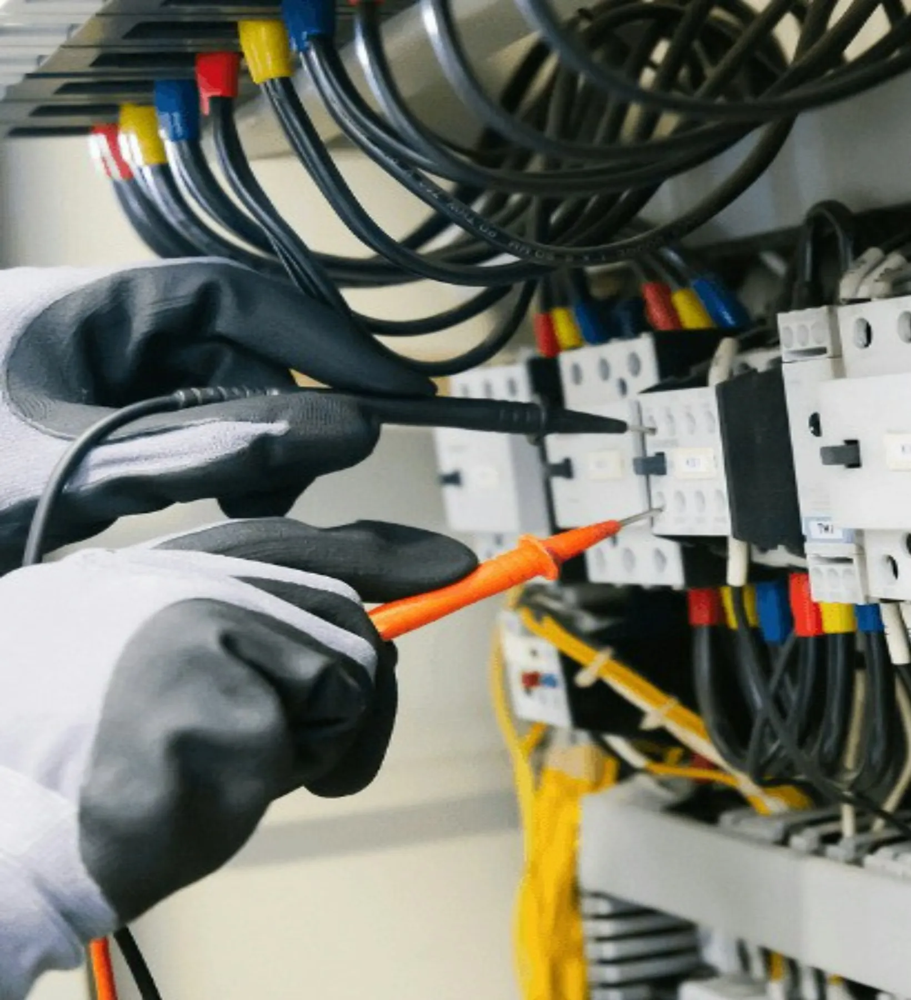

Villanyszerelés Pécsen, lakástól az iparig
Hibaelhárítás, mérőhely-szabványosítás, teljesítménybővítés és komplett villanyszerelés. E-ON minősített szerelőként az áramszolgáltatói ügyintézést is elvégezzük.
- 5,0 csillag, 94 Google-vélemény
- E-ON minősített szerelő
- Sürgős hibánál este is

Mi a gond?
Sürgős hibánál megmutatjuk, mit tegyen most, minden másnál visszahívjuk felmérésre és árajánlatra.
Válasszon egyet:
Sürgős hiba? Most ezt tegye
- Ha biztonságosan eléri, kapcsolja le a biztosítékot vagy a főkapcsolót.
- A szikrázó aljzathoz, kapcsolóhoz ne nyúljon, és ne használja tovább.
- Ha füstöt vagy lángot lát, azonnal hívja a 112-t.
Egyik Google-véleményünkből: „Péter és csapata 30 percen belül házhoz jöttek”, este 6 után, amikor más nem vállalta.
Munkáink
Saját fotók a Facebook-oldalunkról: a mérőhelytől a földkábeles bekapcsoláson át az utcai világításig.
Akik már hívtak minket
Sürgős hiba, este
„Péter és csapata 30 percen belül házhoz jöttek… Előtte 12 másik villanyszerelőt hívtunk fel, de egyik sem volt hajlandó 18:00 után házhoz jönni.”
E.ON-os új bekötés
„Péter 100 százalékban megbízható, kedves, jó szakember. Korrekt, jól dolgozik. A megadott árajánlatot tartotta.”
Elektromosautó-töltő
Felmérés után 1–2 napon belül részletes árajánlatot kapott, a töltő megérkezése után másnap jöttek, és pár óra alatt telepítették a Tesla Wall Connectort.
Amit vállalunk
A lakossági villanyszereléstől a társasházakon át az ipari szerelésig.
Visszahívást kérek- HibaelhárításSürgős esetben este is
- Mérőhelyek szabványosításaEgy- és két tarifás mérőhely
- Mérőhelyek felújítása
- TeljesítménybővítésE-ON minősített szerelőként
- Családi házak komplett villanyszerelése
- Panel- és téglalakások komplett villanyszerelése
- Társasházak, intézmények és ipari létesítmények villanyszerelése
- Elektromosautó-töltő telepítéseÁramvédelmi kapcsolókkal
Gyakori kérdések
Este is kijönnek, ha sürgős a hiba?
Igen. A Google-on éjjel-nappal elérhetőként szerepelünk. Egyik ügyfelünk 18 óra után hívott szikrázó biztosíték miatt, és 30 percen belül nála voltunk.
Elintézik az E.ON-os ügyintézést?
Igen. E-ON minősített szerelők vagyunk: szabványosítjuk és felújítjuk a mérőhelyet, bővítjük a teljesítményt, és intézzük az új bekötést. Az áramszolgáltató saját határidejére nincs ráhatásunk, az árajánlatunkat viszont tartjuk.
Mennyi idő alatt kapok árajánlatot?
Helyszíni felmérés után készül. Egy elektromosautó-töltős ügyfelünk a felmérés után 1–2 napon belül megkapta a részletes ajánlatot.
Vállalnak elektromosautó-töltő telepítést?
Igen, például Tesla Wall Connectort telepítettünk áramvédelmi kapcsolókkal. A töltő megérkezése után másnap mentünk, és pár óra alatt elkészültünk.
Hol vállalnak munkát?
Pécsen és környékén, például Szederkény környékén is dolgoztunk. Lakást, családi házat, társasházat, intézményt és ipari létesítményt egyaránt vállalunk.